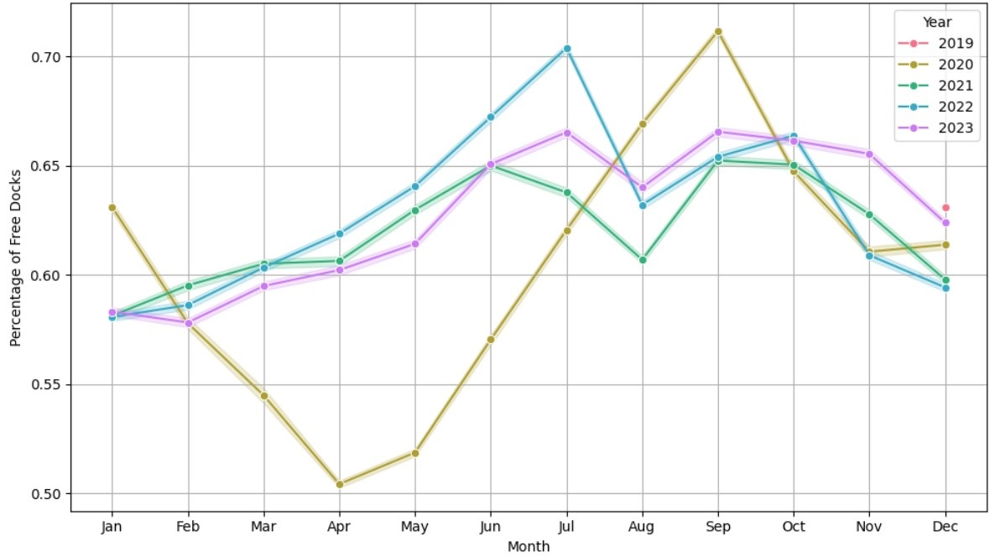
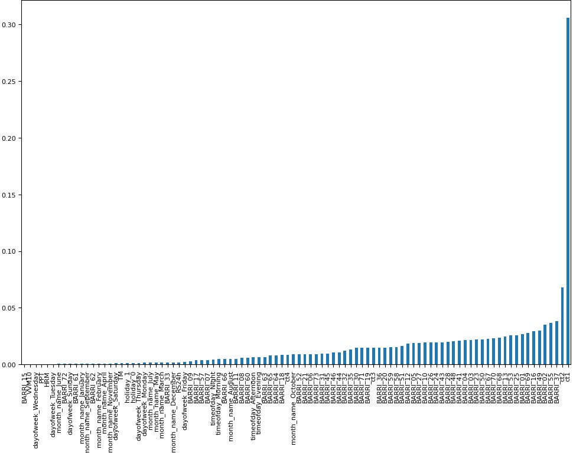

The purpose of this research is to predict the percentage of free docks based on the historical data from each Bicing station, a bicycle-sharing system in Barcelona, Spain.
The data used for the prediction was obtained from Open Data BCN, providing information on the number of bicycles and available docks per station between 2020 and 2023. Additionally, station-specific information such as the total number of docks and their coordinates was included from this file.
Processing
The project used Python for development, emphasizing the handling of large datasets with Dask. Dask was selected for its capability to process data larger than available memory by parallelizing operations across multiple cores or distributed computing clusters, providing substantial performance benefits over traditional tools like pandas.
Firstly, a Dask DataFrame was created by concatenating raw records from all available months of data, spanning from January 2020 to December 2023. Below are the initial records from this DataFrame:
| station_id | num_bikes_available | num_bikes_available_types.mechanical | num_bikes_available_types.ebike | num_docks_available | last_reported | is_charging_station | status | is_installed | is_renting | is_returning | last_updated | ttl | |
|---|---|---|---|---|---|---|---|---|---|---|---|---|---|
| 0 | 1.0 | 38.0 | 35.0 | 3.0 | 8 | 1672527561 | True | IN_SERVICE | 1.0 | 1.0 | 1 | 1.672528e+09 | 19.0 |
| 1 | 2.0 | 6.0 | 5.0 | 1.0 | 23 | 1672527391 | True | IN_SERVICE | 1.0 | 1.0 | 1 | 1.672528e+09 | 19.0 |
| 2 | 3.0 | 20.0 | 20.0 | 0.0 | 7 | 1672527440 | True | IN_SERVICE | 1.0 | 1.0 | 1 | 1.672528e+09 | 19.0 |
| 3 | 4.0 | 19.0 | 19.0 | 0.0 | 2 | 1672527516 | True | IN_SERVICE | 1.0 | 1.0 | 1 | 1.672528e+09 | 19.0 |
| 4 | 5.0 | 4.0 | 3.0 | 1.0 | 35 | 1672527342 | True | IN_SERVICE | 1.0 | 1.0 | 1 | 1.672528e+09 | 19.0 |
Next, the records were filtered to keep only the stations in service, and data transformation began.
Initially, the data was processed year by year, identifying discrepancies where records within a year did not correspond to the year being processed, which led to their exclusion. Subsequently, the hour from the 'last_reported' column was extracted, and the percentage of free docks ('pct_free_docks') was computed using the columns 'num_docks_available' and 'num_bikes_available'. This resulted in a new dataframe where data was grouped to calculate the average free docks per station-hour.
Finally, fields for the percentage of free docks from each of the previous 4 hours per record were added, along with date-related columns formatted to match the required output format for prediction. This process generated a {year}_processed_file.csv for every year with the processed data, as shown below:
| station_id | sum_date | pct_free_docks | year | month | day | hour | ct1 | ct2 | ct3 | ct4 | |
|---|---|---|---|---|---|---|---|---|---|---|---|
| 0 | 52.0 | 2023-01-01 02:00:00 | 0.341667 | 2023 | 1 | 1 | 2 | 0.347222 | 0.423563 | 0.267337 | 0.266667 |
| 1 | 52.0 | 2023-01-01 07:00:00 | 0.483333 | 2023 | 1 | 1 | 7 | 0.552778 | 0.558333 | 0.527778 | 0.466667 |
| 2 | 52.0 | 2023-01-01 12:00:00 | 0.417720 | 2023 | 1 | 1 | 12 | 0.408333 | 0.444444 | 0.486111 | 0.483333 |
| 3 | 52.0 | 2023-01-01 17:00:00 | 0.239559 | 2023 | 1 | 1 | 17 | 0.286111 | 0.266667 | 0.327778 | 0.344444 |
| 4 | 52.0 | 2023-01-01 22:00:00 | 0.591667 | 2023 | 1 | 1 | 22 | 0.586111 | 0.516667 | 0.433333 | 0.348276 |
These dataframes, grouped by station-hour and separated by year, allow for easier manipulation. For training the models, data from 2021 and 2022 was used, while data from 2023 was reserved for validation. The year 2020 was excluded due to its significantly different behavior compared to the other years, as detailed in the Exploration section below.
Station-specific data was also added to incorporate geographical and operational details for each station. Additional datasets believed to provide valuable insights into analyzing dock availability patterns were included as well. These contributions will be elaborated upon in detail in the Enrichment section.
Enrichment
Firstly, additional time-related columns were incorporated, including:
- Day of the week
- Time of day (Morning, Afternoon, Evening, Night)
Additionally, a column indicating public holidays was added, using the public holiday calendar of Catalonia. This was based on the hypothesis that Bicing bikes usage strongly depends on time of day and work/school days.
Furthermore, to enrich the dataset with more geographical information, columns related to neighborhoods were included, sourced from Open Data BCN. These additions are presumed to provide insights into different usage patterns across geographic areas.
Lastly, weather information from meteo.cat was included to supplement the dataset with climatic conditions, which are believed to significantly influence bikes usage. The inclusion of weather data aims to understand if and how conditions like rain impact Bicing usage patterns.
To enrich the dataset, scikit-learn pipelines were used. This approach allowed for the consistent and efficient application of all data transformations, scaling of numerical features, encoding and addition of new time-related and geographical columns to any other dataset with the same input format. It simplified the workflow and ensured reproducibility.
Firstly, a merging pipeline was created to add all the attributes believed to enhance prediction accuracy. This pipeline also included a step to discard records with null values, ensuring that the dataset remains clean and reliable for analysis. Secondly, an encoding pipeline was defined. For categorical variables, One-Hot Encoding was used, while for numerical variables, a SimpleImputer with a median replacement strategy and a StandardScaler were applied to ensure comparability of attributes.
With these two pipelines, a dataset of 95 attributes was generated for training predictive models. These variables correspond to the encoding of the following original features:
- Day of the week
- Holiday indicator
- Time of day
- Month
- Neighborhood
- Percentage of free docks from 1 to 4 hours before
- Average temperature
- Average relative humidity
- Precipitation
- Solar radiation
- Average wind speed
Exploration
As background, it is important to note that between March 14, 2020, and June 21, 2020, Spain entered a state of lockdown due to the COVID-19 pandemic. This period is evident in the graph below, where the trend for free docks follows a similar pattern for other years, with an increase from the beginning of the year until the start of the summer season. However, during the lockdown months in 2020, there is a significant decrease.
 Monthly comparison of the percentage of free docks between 2020-2023Due to the outlier behavior during the 2020 lockdown, where data significantly deviates from other years, the 2020 data was excluded from model training. This ensures the predictive models are not skewed by pandemic-related anomalies.
Prediction
Linear regression
Firstly, a simple linear regression was developed. The following graph represents the absolute values of the coefficients for each attribute based on the training data:
The most significant attributes for the model, as anticipated, are the percentages of free docks from the two preceding hours, underscoring the strong temporal correlation between past and future availability. Additionally, several neighborhoods emerge as important factors, indicating a geographical relationship with bike usage patterns. Conversely, the regression assigns minimal importance to meteorological data. This suggests that weather effects might be indirectly captured within the autoregressive variables, reducing their direct impact on the model.
Next, when testing the trained model on the validation data, the following performance metrics were obtained:
R^2 Score: 0.8375777661567385
RMSE: 0.11281038105252036
Study Cases
For those who have seen the Earth from space, and for the hundreds and perhaps thousands more who will, the experience most certainly changes your perspective. The things that we share in our world are far more valuable than those which divide us.
The dreams of yesterday are the hopes of today and the reality of tomorrow. Science has not yet mastered prophecy. We predict too much for the next year and yet far too little for the next ten.